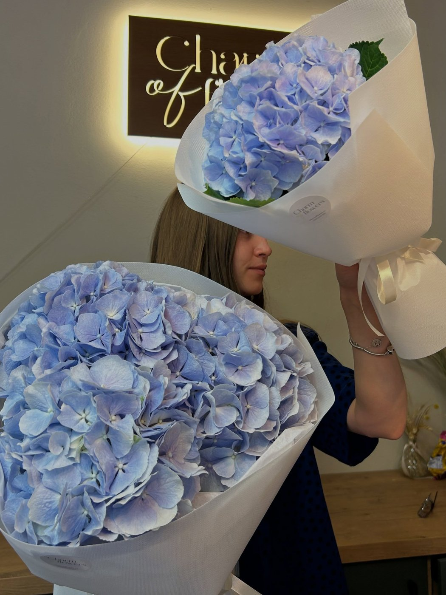
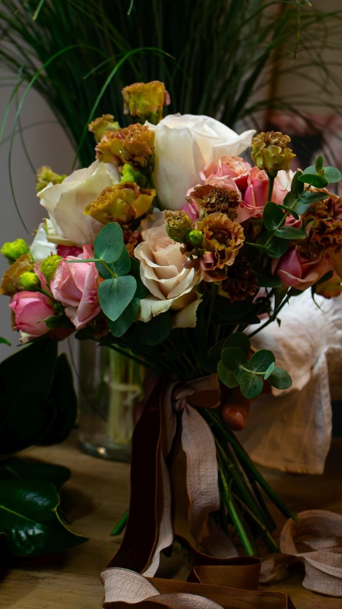
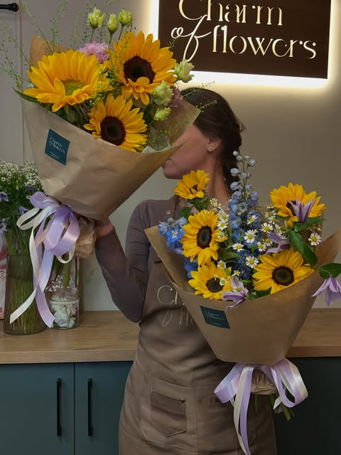

Kytice na míru
Řekněte nám příležitost a rozpočet — zbytek vymyslíme. Vážeme z toho, co je zrovna nejčerstvější.
Květinářství · Pražská 43, Plzeň
Každá kytice má svůj příběh.
Vážeme na míru — od malé kytice do bytu po svatební výzdobu. Co nestihnete vyzvednout, přivezeme.

Co u nás pořídíte
Řekněte nám příležitost a rozpočet — zbytek vymyslíme. Vážeme z toho, co je zrovna nejčerstvější.
Svatební kytice, korsáže, výzdoba obřadu i tabule. Termíny rezervujeme s předstihem, ozvěte se včas.
Naučíme vás vázat. Pro začátečníky, party i firmy — ve skupině nebo jeden na jednoho.
Vozíme každý den od 9:00 do 20:00. Čas doručení si zarezervujete dopředu, ať kytice dorazí ve správnou chvíli.
Kytice pravidelně domů, do kanceláře nebo jako dárek — 2–4× měsíčně. Velikosti S 750 / M 1 200 / L 1 500 Kč.

Jak si objednat
Nemusíte vybírat konkrétní květiny. Řekněte, kolik chcete utratit a pro koho kytice je — složíme ji z toho nejlepšího, co ten den máme.
Malá pozornost
do 1 000 Kč
Kytice na návštěvu, do bytu nebo jen tak. Rychle a bez objednávky předem.
ObjednatNejčastější volba
1 000 – 2 000 Kč
Narozeniny, výročí, poděkování. Velikost, u které se většina zákazníků zastaví.
ObjednatAutorská kytice
od 2 000 Kč
Velké vazby a květinové boxy, které jsou vidět už ode dveří. Rozvoz po Plzni zdarma.
Objednat| Kytice z denní nabídky | do 1 000 Kč |
|---|---|
| Kytice na přání | 1 000 – 2 000 Kč |
| Autorská kytice, květinový box | od 2 000 Kč |
| Svatební kytice | individuálně |
| Výzdoba svatby či akce | individuálně |
| Kurz vázání, workshop | na dotaz |
| Rozvoz po Plzni (9–20 h) | od 2 000 Kč zdarma · jinak dle vzdálenosti |
| Květinové předplatné (2–4× měsíčně) | S 750 · M 1 200 · L 1 500 Kč |
Přesnou cenu vždy potvrdíme předem — telefonicky nebo ve formuláři níže.
Nejnovější kytice přidáváme na Instagram — tady je posledních šest z dílny.
galerie se obnovuje automaticky · aktualizováno
Co říkají zákazníci
„Majitelka váže moc krásné kytice za velmi příznivé ceny."
recenze zákazníka · Živéfirmy.cz
„Elegantní obchod plný krásných vonících květin."
recenze zákazníka · Živéfirmy.cz

Příběh za jménem
Charm of Flowers vede Nataliia Ivasiuk. Vlastní květinářství měla už na Ukrajině — než ho kvůli válce musela nechat za sebou.
S manželem našli nový domov v Plzni. Nataliia tu nejdřív pracovala v místním květinářství a pak si otevřela svoje vlastní, od nuly a podruhé v životě.
Proto má u nás každá kytice svůj příběh. O odvaze začít znovu — a o tom, že krása umí vyrůst i po těžkých zkouškách.
Než se zeptáte
Zavolejte nebo napište — domluvíme se, kdy bude kytice připravená. U větších vazeb a květinových boxů počítejte raději den či dva dopředu.
Ano, rozvážíme po Plzni a okolí každý den od 9:00 do 20:00 — obvykle do 30 až 60 minut. Při objednávce od 2 000 Kč je rozvoz po Plzni zdarma, jinak cenu potvrdíme podle vzdálenosti.
Čím dřív, tím líp — termíny rezervujeme s předstihem. Na konzultaci probereme styl, barvy i výzdobu obřadu a tabule.
Ano. Domluvíte se česky, anglicky i ukrajinsky — v obchodě, po telefonu i na Instagramu.
Vážeme ve skupině i jeden na jednoho — pro začátečníky, party i firmy. Aktuální termíny najdete na našem Instagramu, nebo se ozvěte.
Kde nás najdete
| Pondělí – sobota | 9:00 – 18:00 |
|---|---|
| Neděle | 10:00 – 15:00 |
| Rozvoz po Plzni | denně 9:00 – 20:00 |
Voláme i píšeme zpátky — telefonicky, na Instagramu i na Facebooku.
Napište nám
Odpovídáme během otevírací doby, obvykle do pár minut.
Instagram Messenger Zavolat 723 477 375 Poptávkový formulář